Overview
At Grand Canyon University, participation is 10% of an online student's grade, earned only by replying in course discussions. Students couldn't see whether their replies counted, and instructors spent hours correcting posts made in the wrong place.
I was asked to redesign the discussion list. After the first concepts fell short, I moved participation into the calendar students already used as their weekly checklist, and gave instructors a simpler way to set up and grade it.
The challenge
Participation was worth 10% of the grade, but students couldn't see how they were doing.
85% of GCU students study online. For them, discussion replies are the only way to earn participation credit, and the main way to connect with classmates and instructors.
10%
of a student's overall grade
85%
of GCU students learn online
4 days
a week, with at least two qualified replies each day
The university's policy is specific: to earn full credit, students post at least two qualified replies on four different days each week. Only replies to classmates count. Responding to the main prompt earns separate discussion credit.
Before the redesign: how participation credit was earned
But the platform gave no feedback until grades were published. Students tracked their replies by hand, often posted in the wrong place, and lost credit. Instructors then had to find those posts, message students, and fix grades manually.
The brief was to redesign the discussion list so students could find the right discussion and track their progress.
Who I designed for
Students
Working adults, fully online
Most study part-time while working full-time and caring for family. They need to keep up with participation every week to protect their GPA.
Instructors
250+ students at a time
A typical instructor teaches 4 online courses a term. They need to support students and grade efficiently across all of their classes.
What research revealed
I didn't have direct access to students, so I relied on satisfaction surveys, IT support tickets, instructor feedback, and student quotes shared by the university. Four pain points came up. Students faced a confusing workflow and unclear participation tracking. Instructors faced high monitoring overhead and manual grading workarounds.
Student pain point: Confusing workflow
Three steps to reach the right discussion, then two similar buttons
1Open the Participation card
The card had no links to the discussions that counted, only a Discussion Forums button.
2Find this week’s discussions
Students scrolled a list of every discussion in the course to find the current topic.
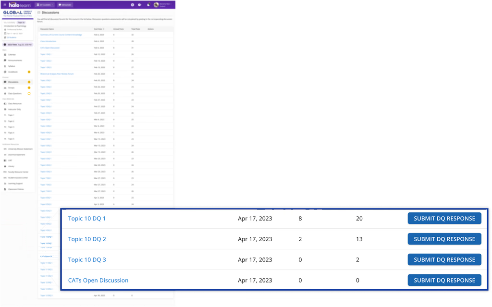
3Choose the right action
Submit DQ Response earns discussion credit. Only Reply earns participation credit.
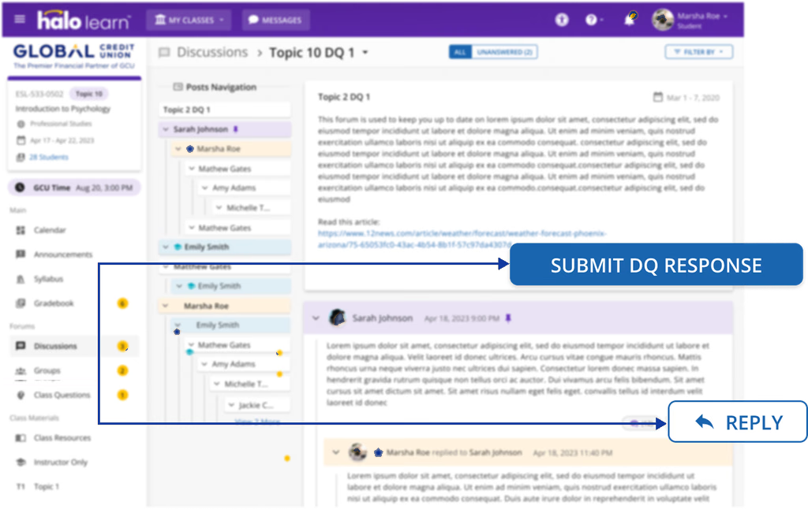
Student pain point: Unclear participation tracking
No personal progress anywhere, so students tracked it themselves
1Check the discussion list
It showed unread and total posts for the whole class, not the student’s own replies.
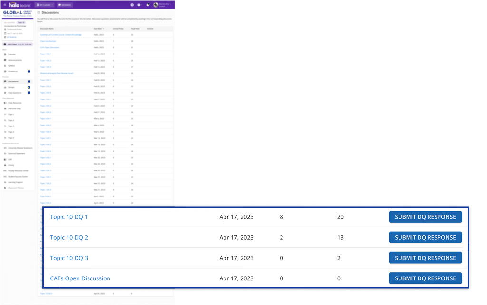
2Find their own replies
Students scanned nested threads for their name, one discussion at a time.
3Keep count by hand
They tallied replies per day themselves, without knowing which would qualify.
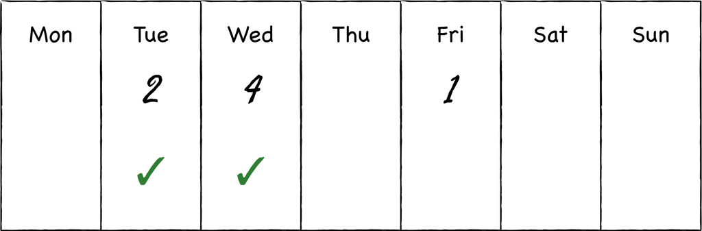
“I have to manually keep up with them. I only see how many Discussions and responses were completed once I get my grade.”
Instructor pain points: High monitoring overhead and manual grading workarounds
Four manual steps for each incorrect submission
High monitoring overhead
Identify students who posted incorrectly
Message them to resubmit as replies
Manual grading workarounds
Mark the posts 0 in discussion grading
Grade the replies in participation grading
An instructor teaching 4 online courses a term handles 250+ students at once.
These four pain points shaped the question for the redesign.
“How might we create a participation experience that gives students transparency into their progress while reducing instructor workload?”
First attempt: redesigning the discussion list
I was assigned to redesign the discussion list, so that is where I started.
Based on early ideation sessions with instructors, we hypothesized that adding a progress tracker to the discussion list would solve the transparency issue. I designed two initial concepts.
Concept 1
Time-based discussion organization
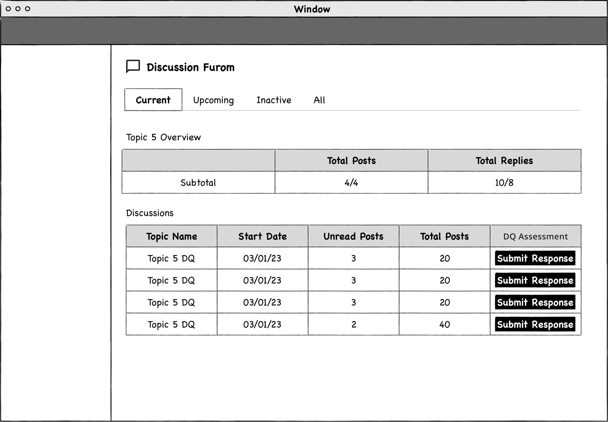
1Time-based tabs
Reduce scrolling and let students focus on current items.
2Tracking posts and replies
Counts posts for discussion, replies for participation within the current topic.
3Matching tracker and discussion list
Limits the discussion list to active items from the same topic.
Concept 2
Separate discussion vs. participation
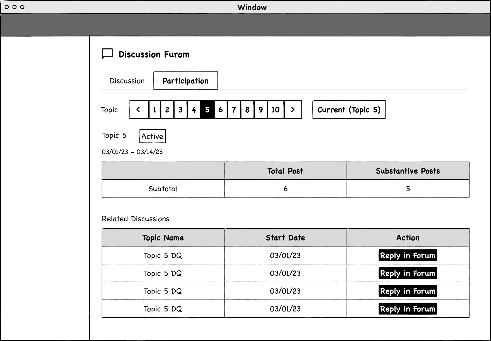
1Dedicated participation tab
Clear space just for participation.
2Semester visibility
Review participation across all weeks.
3Replies-only progress tracker
Counts only replies, since posts don’t earn participation credit.
4Direct actions
Extra space includes related discussions with direct reply links.
Instructor feedback
When I presented these concepts to instructors, their feedback was underwhelming.
“It's better than nothing.”
This response revealed we hadn’t solved the real problem.
The turning point
The first attempt improved the list, but the feedback showed the real problem was somewhere else. So I stepped back and compared how students complete participation with how they complete every other assessment.
Participation was the only assessment that broke the pattern
Every other assessment
Participation
Every other assessment followed the same pattern: start from Calendar or Syllabus -> open the card -> submit. Participation was the exception. Students had to leave the card, search a long list, and keep their own records.
Participation needed to work like every other assessment.
So I designed Concept 3. Instead of improving the list, I made the Participation Assessment Card in Calendar and Syllabus the entry point, the same place students start every other assessment.
Concept 3
The Participation card as the new entry point
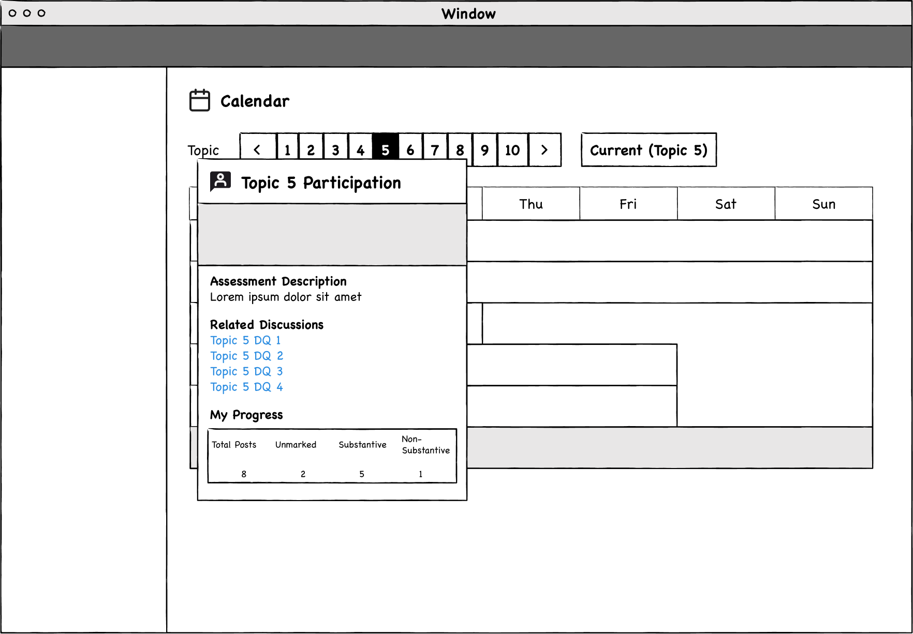
1Related discussions
Direct links take students to the discussions that count, so they reply in the right place.
2My progress
Shows how many replies count toward participation credit. This early version also showed grading status, which I revisited in Decision 2.
Changing the brief
Moving participation into the Participation Assessment Card went beyond the original requirement, and changing how students submit participation worried leadership. The project paused while the product owner and I made the case. Three pieces of evidence convinced them:
- Student behavior. Students already used Calendar and Syllabus as their weekly checklist.
- Instructor validation. Instructors agreed the new flow matched how students work and would reduce confusion and messages.
- Edge cases. In the existing list, students couldn't tell which discussions counted toward which participation requirement.
With leadership's approval, we moved into detailed design.
This reframing led to three design decisions.
Decision 1
Start participation from the calendar
Participation now works like every other assessment.
I redesigned the Participation Assessment Card in Calendar and Syllabus as the entry point for participation. Students open it the same way they open any assignment, and everything they need for the week is in one place.
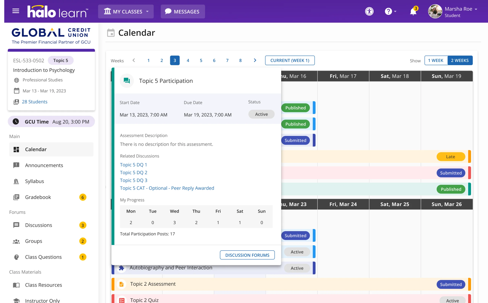
1Related discussions
Students jump directly to active discussions.
2Daily progress
Reflects the 4-day, 2-reply rule without emphasizing “minimum met.”
3Total posts
Shows total counts for daily and overall progress.
4Discussion Forums button
Stays in place, so students can still reach all discussions.
Half the steps, and no guesswork
Students no longer search the list or keep their own records. The card takes them to the right discussion and shows their progress as they go.
Student workflow: from 6 steps to 3
Before
After
Decision 2
Design a tracker that's fair to every grading style
The tracker had to show progress without promising a grade.
One policy, two ways of grading
The policy asks for two qualified replies on four different days each week. In practice, instructors grade differently. Strict graders require replies spread across the days. Flexible graders count the total. The same week of work could earn two different grades.
Same effort, different grades: each square is one reply
Week A
Strict grader
Full credit
Flexible grader
Full credit
Week B
Strict grader
Partial credit
Flexible grader
Full credit
The tracker couldn't take a side. It had to be accurate for both grading styles, without creating new work for instructors.
Two iterations, two kinds of pushback
Iteration 1
Dual-view tracker
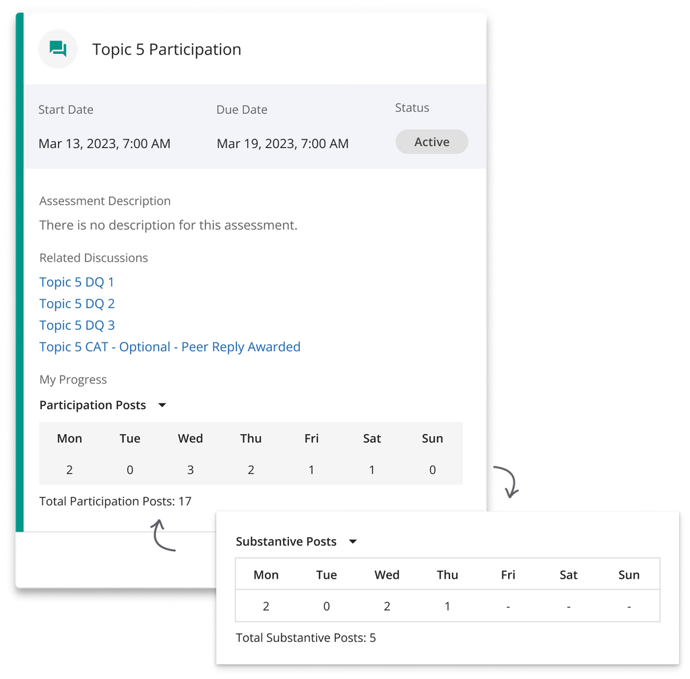
What it showed
A dropdown switched between daily reply counts and an estimate of qualified replies.
Instructor pushback
A qualified count would pressure instructors to grade immediately, adding work instead of removing it.
Iteration 2
Highlight the minimum
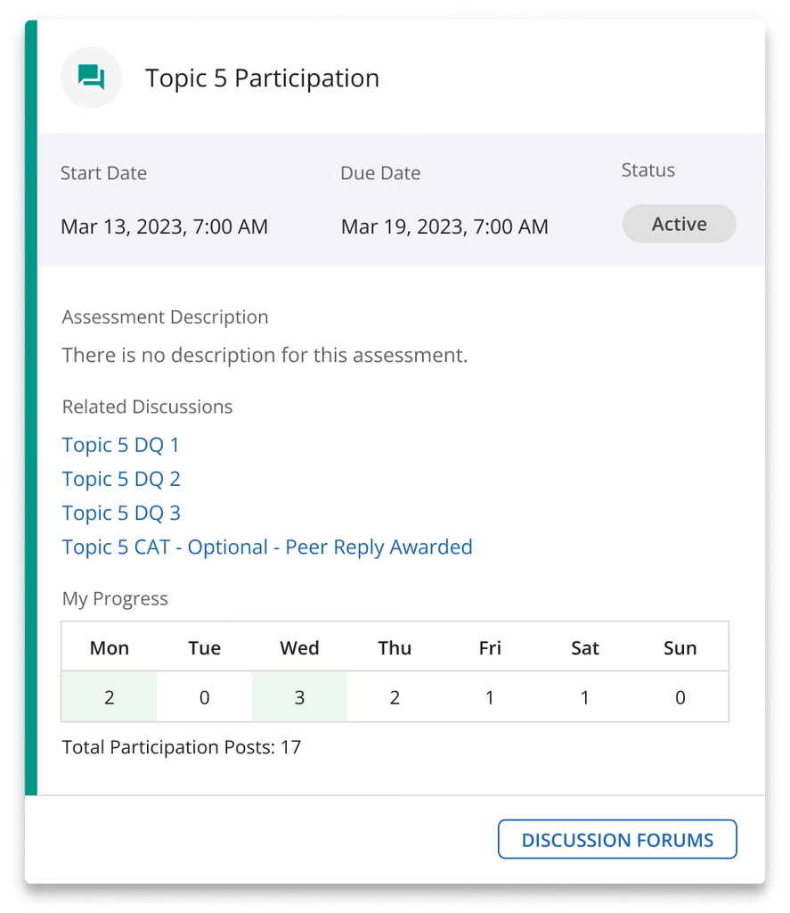
What it showed
Days with at least two replies were highlighted as meeting the minimum.
University concern
Highlighting the minimum might discourage students from doing more than required.
Final design
Show activity, not a verdict
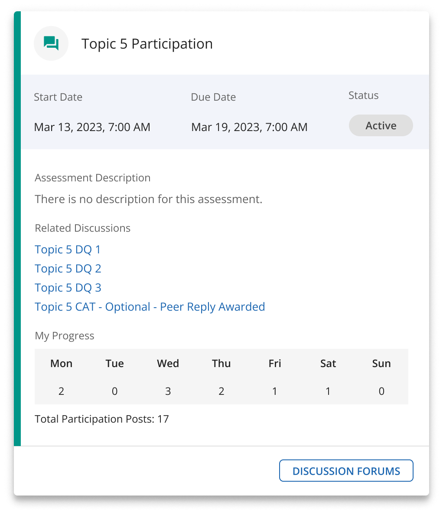
What it showed
Reply counts for each day and a weekly total, laid out to mirror the four-day, two-reply rule.
Why it works
No grading estimate, so no pressure on instructors. No “minimum met” signal, so no ceiling for students.
The final tracker shows facts, not judgments. Students see their own activity clearly, and instructors keep the decision about what qualifies.
Decision 3
Turn edge cases into a supported discussion type
Rules the system couldn't represent became a setting instead of a manual fix.
The forum had two kinds of credit: discussion credit for responding to the main prompt, and participation credit for replying to others. Some discussions were edge cases.
| Discussion type | Discussion creditfor responding to the prompt | Participation creditfor replying to others |
|---|---|---|
| General case | ||
| Standard | Earned | Earned |
| Edge cases | ||
| Introductionsthe first two of each term | 0 points | Replies still count |
| Subject-specificfor example, math | Not graded | Only replies to the student’s own response count |
The system couldn't represent these cases. Instructors explained them in announcements and corrected grades by hand, and students still posted in the wrong place. I proposed a discussion that counts only toward participation.
Two options for a team with limited bandwidth
Adding a participation-only discussion needed backend changes, because the platform had to store and grade a new kind of discussion. Our backend team was offshore and had limited capacity, so development effort mattered as much as the design.
I didn't know which approach would be easier to build. So I designed two options and showed how each would change the three affected views, giving engineers enough context to estimate.
Option A
A new assessment type
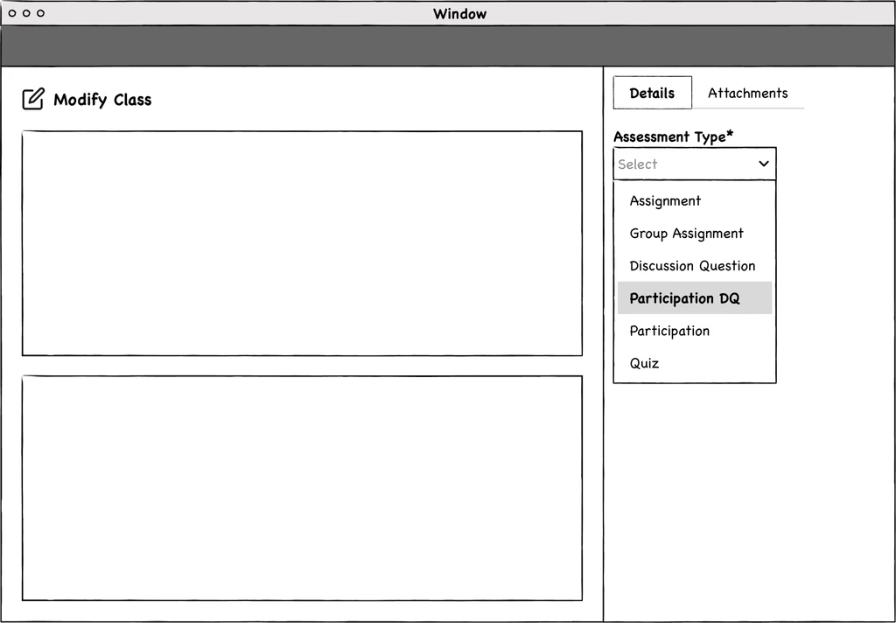
Class editor“Participation DQ” added to the assessment type list
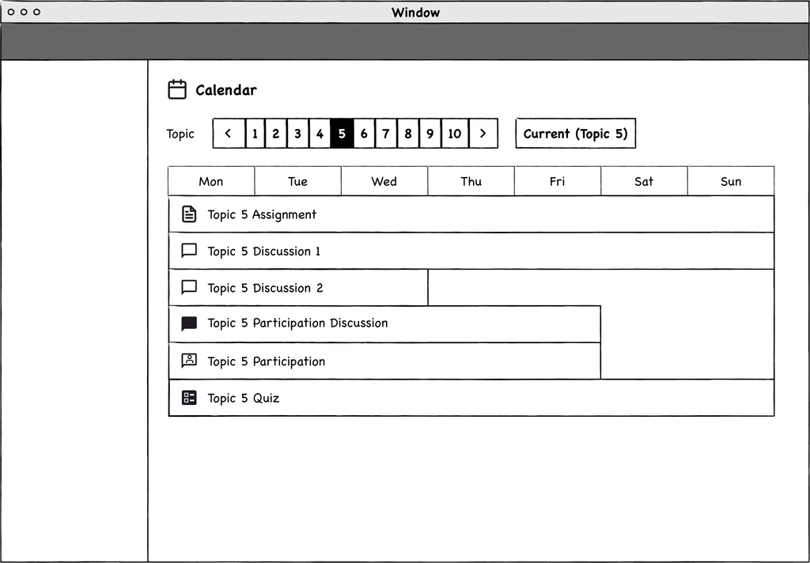
Student calendarA new icon for participation discussions
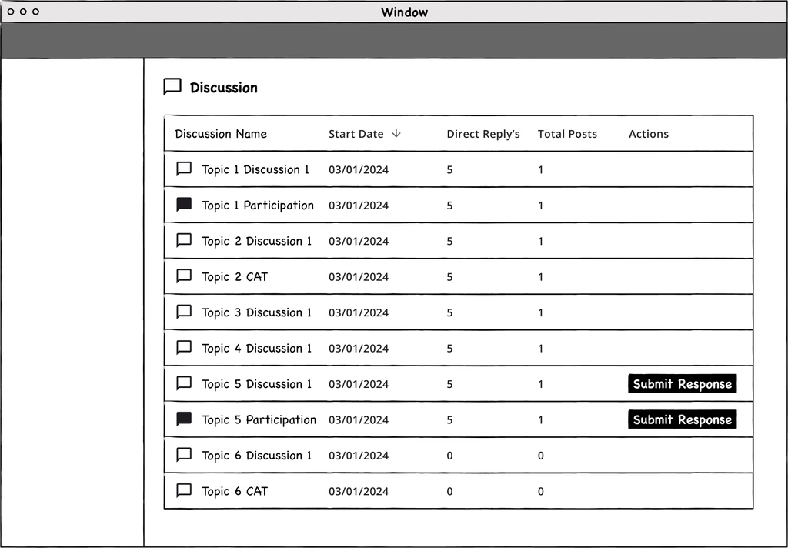
Student discussion listParticipation discussions mixed in with a new icon
Option B
A subtype of the existing discussion
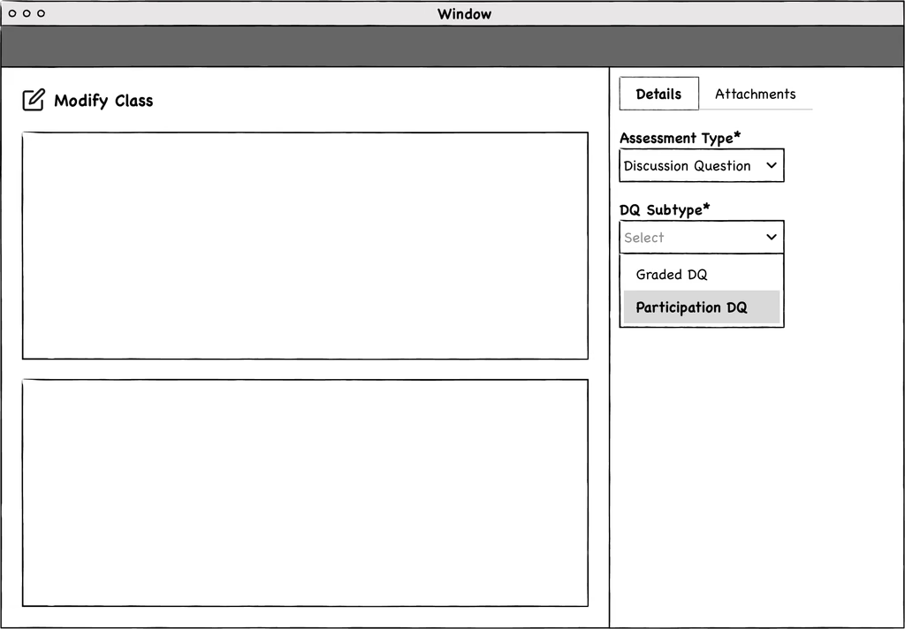
Class editorA DQ Subtype field, Graded or Participation
Student calendarThe same discussion icon as every other discussion
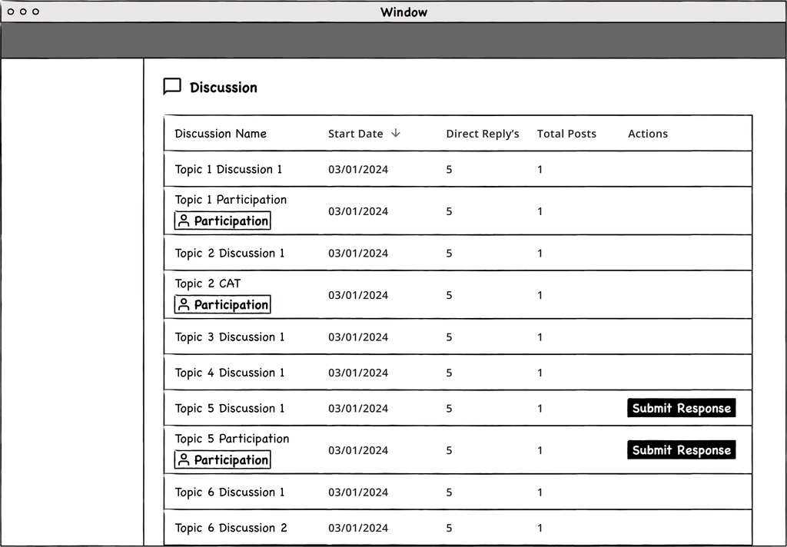
Student discussion listA Participation tag under the name
The backend team estimated about the same effort for both. With feasibility equal, I compared them on usability and scalability.
| Criteria | A. New assessment type | B. Discussion subtypethe option we chose |
|---|---|---|
| Usability | Students might see it as “not graded” and engage less. It’s one more type to learn. | Looks and works like any discussion, so students treat it as real work. |
| Scalability | Every new need requires a new object type. | New subtypes can be added without new objects. |
We chose the subtype: simpler for students, and easier for the platform to grow.
One setting for instructors, one action for students
Instructors create a participation-only discussion the same way as any other: choose Discussion Question, then pick the subtype.
Instructor view
Choose the subtype when creating a discussion
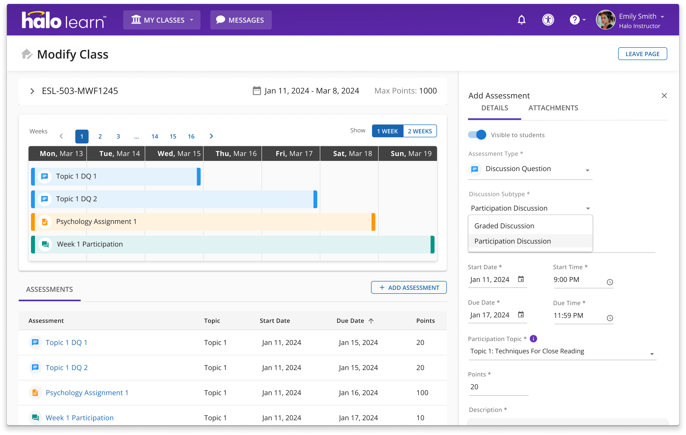
1Discussion subtype
Instructors choose Graded Discussion or Participation Discussion when they add a discussion.
2Participation topic
Links the participation discussion to the topic it belongs to.
3Calendar
Participation shows on the calendar next to the other assessments.
4Assessment list
Participation sits in the same list, with its own dates and points.
For students, a participation-only discussion looks like any other, so they treat it as real work. Three details make the difference clear: a tag, an info icon that explains which participation assessment it counts toward, and a single primary action, reply.
Student view
Labeled, explained, and one clear action
1Tag
“Graded with Participation” marks the discussion as participation-only.
2Info icon
The tooltip names the participation assessment it counts toward.
3One clear action
Reply to Discussion is the only primary button.
Student view, in the discussion
Participation is now one clear action: reply
1Reply to Discussion
The only action on the prompt. There's no Submit Response button, so students can't post in the wrong place.
2Reply
Students reply to classmates right in the thread.
Less correcting for instructors
With the right discussions linked and labeled, students post in the right place, and instructors no longer chase misplaced replies.
Instructor workflow: from 4 steps to 2
Before
After
Impact
Measured across all online courses in the first term after launch, compared with the term before.
12%
higher average weekly participation, measured as qualified replies per student. The right discussions were easier to reach, and progress was visible.
19%
faster grading. Instructors finished participation grading in less total time, because replies are graded in one place.
97%
fewer repost requests. Instructors asked fewer students to repost replies made in the wrong place.
6 → 3
steps for students to earn participation credit, starting from the calendar.
4 → 2
steps for instructors to grade participation, with no manual corrections.
Reflection
I was asked to improve a list. The bigger opportunity was making participation follow the same pattern as everything else students do.
Three lessons stayed with me:
- Look for the need behind the request. Instructors asked for a tracker on the discussion list because the old system had one. Asking why showed the real need: students wanted to see their progress in context, not in another busy list.
- Triangulate when you can't reach users directly. Without access to students, I treated each source as partial and trusted only the patterns that appeared across surveys, tickets, and instructor feedback.
- Design for the policy and the practice. University rules applied to every course, but every instructor taught and graded differently. The neutral tracker and the participation-only subtype let the system adapt to instructors while keeping the student experience simple.